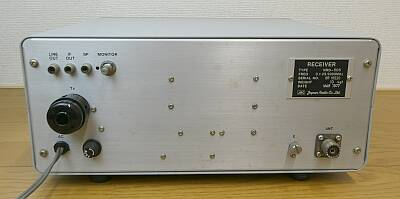
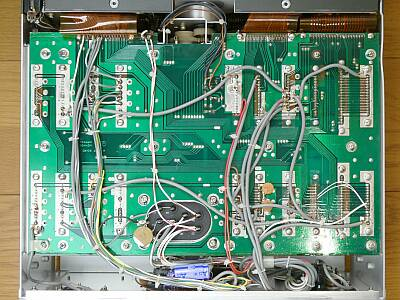
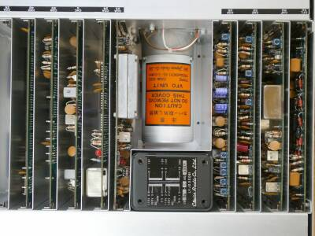
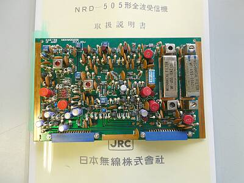

 |
背面です
極めてシンプル |
 |
シャーシ下面です
おなじみのマザーボードによるスロット採用・・・縦方向に基板を差し込む方式です |
 |
おなじみのスロット構造です
プラグイン方式によるモジュール化となっています
中央に、アルミダイキャスケース/VFOが配置されています
そのすぐ左に見えるVCOのケースも、やはりアルミダイキャストです
本機は、初期製品 １９７７年製のものです
オプションである、周波数メモリユニットが内蔵されています（写真左端） |
|
 |
CWフィルタを組み込んでみました
純正には、１０ＡＺの後が「１２１」との記載があるようです
入手したのは、１０ＡＺのあとの記載が「２７」のもの、一般に良く出回っていたものだと思います
どこが違うか・・・
目視で確認すると、入力と出力が逆になっています（P-BとG-Eの足の配置が反対）
従って、取付は銘板シールの表示がSSBフィルタとは逆になるような方向になります（説明書に記載があるような同じ方向への取り付けでは入出力が逆になります）
逆付けしたらどうなる？ これは試していません！ |
| 2021.07 |
|
年期のわりに、保存状態は非常にいいものでしたが、経年変化は如何ともしがたいことです
ＡＧＣ回路のタンタルコンデンサの絶縁不良（時定数/リリース時間が短い）
→ 交換 ４.７μ ２５Ｖ
周波数メモリユニットが不動
→ 一度マザーボードから抜いて差し込み直したら正常に！？
メインダイヤルのスリップ（１００ＫＨｚダイヤルは正常なれど、３３ＫＨｚダイヤルで場所によってスリップ）
→ 押さえスプリングの調整（強引に平ワッシャを加工して間に入れた）
ΔＦ-ＳＷ プラスチックレバーの固定ピン折れ（と考えられる操作感覚）
→ 動作には問題ないので、今回は無視！ |
さて、最後はお決まりのスペック紹介
ＳＳＢ ０．２μＶ Ｓ/Ｎ １２ｄｂ
ＡＭ ０．５μＶ Ｓ/Ｎ １０ｄｂ
１４．２ＭＨｚでこのような値でした
オリジナルスペックは、十分に満足しています
ＶＦＯ安定度についても、特段気になるようなことは感じません（きわめてアナログ的判断！）
ダイヤルリニアリティについては、直近の１００ＫＨｚマーカーで校正して、±１ＫＨｚ以内といったところ |
|
| 相方の送信機 ＮＳＤ-５０５を入手しましたが、電源配線が不明で通電できていません |
2025.05 |
| なんと純正電源 ＮＢＤ-５０５が入手できました |
2026.03 |
|
|